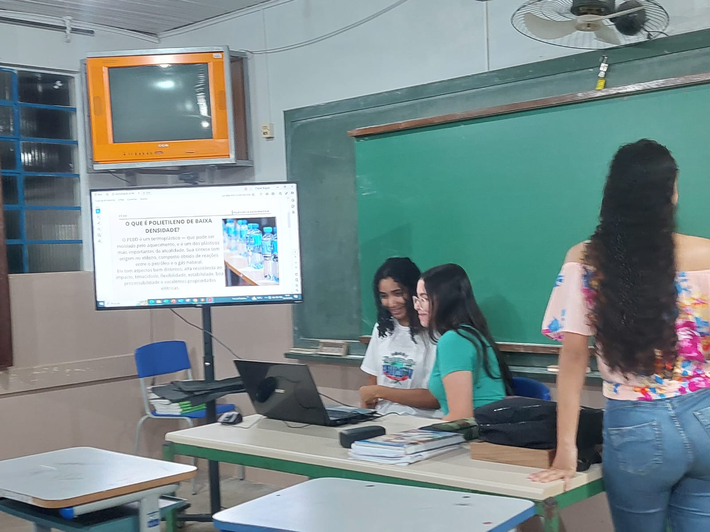

Data Apresentações: 05/10/23 e 12/10/23
Professor: Márcio José Barrada de Abreu
Metodologia: Cultura Maker
Objetivos de Aprendizagem
- Identificação dos compostos organoclorados;
- Compreensão do uso dos organoclorados e suas consequências;
- Análise dos riscos/benefícios das principais aplicações da química na intervenção no meio ambiente e na evolução tecnológica da sociedade.
A imagem abaixo divulgada nos anos de (1940) nos E.U.A, demonstrava o orgulho americano pela utilização e benefícios do uso do DDT. Porém hoje vemos o grandes males que podem causar.
O DDT é considerado uma das substâncias sintéticas mais utilizadas e estudadas no século XX.
As propriedades inseticidas do DDT foram descobertas em 1939 pelo entomologista suíço Paul Müller, o que lhe valeu posteriormente o Prêmio Nobel da Medicina devido ao uso do DDT no combate à malária.
A produção em grande escala iniciou-se em 1945, e foi muito utilizado na agricultura como pesticida, por cerca de 25 a 30 anos. Tanta foi a quantidade que se estimou que cada cidadão norte-americano ingeriu, através dos alimentos, uma média de 0,28 mg por dia em 19505. Outra função para seu uso foi em programas de controle de doenças tropicais, inclusive no Brasil, como malária e leishmaniose visceral.
Foi a descoberta do DDT que revolucionou os conceitos de luta contra a malária. Sua eficácia contra formas adultas dos mosquitos e seu prolongado efeito residual fizeram com que no período de 1946-1970 todos os programas de controle se apoiassem quase que totalmente em seu emprego.
Em 1962, Rachel Carson sugeriu em seu livro "Primavera Silenciosa", que o amplo uso do DDT poderia ser a principal causa da redução populacional de diversas aves; muitas delas seriam as de topo de cadeia alimentar, como o falcão peregrino, e a águia calva ("bald eagle"- Haliaeetus leucocephalus), animal símbolo dos EUA. Este livro é considerado a primeira manifestação ecológica contra o uso indiscriminado do DDT.
Os organoclorados absorvidos pelo ser humano têm potencial de causar lesões renais, no fígado, no cérebro, no coração, na medula óssea, no córtex da supra-renal e no DNA (causando câncer).
Quais são os problemas causados com o uso dos organoclorados?
A contaminação por organoclorados é mundial, e já é possível encontrá-los até na neve do Alasca.
A persistência dos organoclorados no meio ambiente prejudica a reprodução da truta-do-mar, da águia-marinha, dos golfinhos, dos falcões, das águias e dos açores, afetando a cadeia alimentar inteira, inclusive o ser humano.
Intoxicação nos seres humanos
Os organoclorados não se diluem em água, por outro lado, são solúveis em gordura. E os animais, incluindo os seres humanos, são muito ricos em gordura, por isso, a persistência dessa substância em nossos organismos é tão grande.
Podemos absorver os organoclorados pela pele, pela respiração, por meio do contato direto com o trabalho na indústria ou via exposição diária a materiais que contenham essas substâncias. Alguns deles incluem vernizes, paredes, plásticos e alimentos contaminados.
Se for absorvida uma dose elevada num espaço curto de tempo, os sintomas são imediatos. Eles podem ser reversíveis, mas também podem ser fatais.
Se a absorção de organoclorados for menor e em longo prazo, é pior. Isso porque não há sintomas, e os danos são irreversíveis.
Após terem os devidos conhecimentos sobre os conceitos dos Organoclorados e DDTs pertinentes a aula 33 do LRCO, conhecendo a toxicidade e aplicação do DDTs, os alunos reuniram em grupos ( 4 a 6 alunos), e cada grupo realizaram pesquisas em sites, livros ou até mesmo pesquisa de campo, com os pais/avós, descreveram e apresentaram alguns compostos naturais para o desenvolvimento de alguns pesticida/inseticida natural, substituindo os DDTs.
Evidências Apresentadas pelos Alunos

Evidência 01
Alunos: Andre Luiz, Rafael, Adrian e Gustavo.
Controle Natural: Joaninha é indicada para controle biológico de pragas
Se você cultiva algum tipo de hortalícias como: Alface, couve etc.., você pode usar joaninhas como um tipo de pesticida. As joaninhas cuidam das plantas comendo pulgões, moscas brancas e outros insetos que prejudicam suas hortalícias.
Cryptolaemus Montrouzieri é uma joaninha, espécie exótica, que vem sendo benéfica ao homem mundo afora desde o fim do século XIX. Várias colônias dessa joaninha, conhecida como "joaninha-australiana" ou "destruidora-de-cochonilhas", foram enviadas entre 1891-1892 da Austrália à Califórnia para controlar espécies de cochonilhas que atacavam citros, com destaque para o Planococcus citri, da família Pseudococcidae (sem carapaça). Atualmente, dezenas de empresas nos Estados Unidos, por exemplo, produzem esse predador e o comercializam para a liberação em campo.
Composto Natural: Inseticida caseiro para plantas
Deixe ferver cinco dentes de alho e metade de uma cebola em um litro de água por aproximadamente dez minutos. Após esfriar, coe e pulverize a mistura nas plantas afetadas durante o sol baixo.
Evidência 02

Alunas: Kauany Martins, Gabriely Rodrigues, Ana Gabriely e Rayssa Kauana.
Composto Natural: Armadilha luminosa
Armadilha luminosa uma prática utilizada para capturar insetos com hábitos noturnos ,broca e lagartas que são provenientes de tais insetos que fazer a postura
dos ovos durante a noite e com essa armadilha podemos capturá-los a noite e mostra uma eficiência de 60% a 80% , podendo ser uma lâmpada tanto fluorescentes ou lampadas comuns.
A armadilha deve ser colocada ao lado da plantação que deve ser protegida e deve ficar a uma altura de 1,20 m a 3,5 m deve ter as paletas (proteção em volta da lâmpada). E em baixo deve-se colocar uma bacia com óleo queimado ou água com sabão ,
outra soluções são um funil com um saco plástico em baixo.
Evidência 03
Alunas: Kássia, Maria Eduarda, Izabela e Kauana.
O DDT é o primeiro pesticida moderno, tendo sido largamente usado durante e após
a Segunda Guerra Mundial para o combate aos mosquitos vetores de doenças como
malária e dengue. Os primeiros usos em grande escala foram na região da Birmânia
pelos ingleses em 1941 para o combate da maláriadurante a invasão japonesa.
Depois de um tempo o pesticida sendo usado os pesquisadores descobriram que o DDT fazia mal não só para o meio ambiente mais também para os humanos.
Alguns estudos mostram que os pesticidas organoclorados, atuam sobre o sistema nervoso central, resultando em alterações de comportamento, distúrbios sensoriais, do equilíbrio, da atividade da musculatura involuntária e depressão dos centros vitais, particularmente da respiração.
Atualmente tem várias maneiras de se conseguir o desejado que é a desinsetização sem produtos fortes para isso.
Composto Natural: Inseticida com cravinho

Este inseticida natural à base de cravo-da-índia é indicado como forma de prevenção da dengue, através da eliminação do mosquito, e deve ser utilizado em pratos de vasos de plantas.
Ingredientes:
60 unidades de cravo da índia;
1 1/2 xícara de água;
100 ml de óleo hidratante para bebês.
Modo de preparo:
Bater os 2 ingredientes no liquidificador, coar e guardar num recipiente de vidro, escuro.
Composto Natural: Inseticida com vinagre
Colocar um pouco de vinagre num potinho e deixar na área que deseja espantar as moscas e os mosquitos. Para combater os mosquitos que estão sobrevoando dilua 1 xícara de vinagre com 4 xícaras de água e use para pulverizar nos mosquitos.
Composto Natural: Inseticida com canela e detergente
Ingredientes:
100 ml de vinagre branco
10 gotas de detergente
1 pau de canela
50 ml de água
Preparo: Basta misturar todos os ingredientes e depois colocar num pulverizador, e usar sempre que necessário para afastar os mosquitos.
Composto Natural: Inseticida com óleo vegetal
Ingredientes:
2 xícaras de óleo vegetal;
1 colher de sopa de sabão em pó;
1 litro de água.
Preparo: Basta misturar todos os ingredientes e depois colocar num pulverizador, e usar sempre que necessário para afastar os mosquitos.
Composto Natural: Inseticida com alho
Ingredientes:
12 dentes de alho;
1 litro de água;
1 xícara de óleo de cozinha;
1 colher de sopa de pimenta caiena.
Preparo: Bata no liquidificador com alho com a água e deixe repousar por 24 horas e depois acrescente o óleo e a pimenta e deixe repousar por mais 24 horas. A seguir dilua 1/2 xícara dessa mistura pronta com 1 litro de água e use para borrifar no ambiente.
Evidência 04
Alunas: Ana Louise, Ana Paula e Lara Beatriz
Composto Natural: Combate a pulgões com cravo-de-defunto
Ingredientes:
1kg de folhas e/ou talo de cravo-de-defunto;
10 litros de água.
Preparo:Misture as folhas e/ou talos de cravo-de-defunto na água. Leve ao fogo e deixe ferver durante meia hora. Coe o caldo obtido e pulverize as plantas atacadas.
O cravo-de-defunto quando plantado em hortas, jardins ou pomares, repele insetos e mantém o solo livre de nematóides. Plante tagetes junto aos tomateiros para evitar a broca do tomate. Alem disso, quando usado como cama para cães, afugenta pulgas.
Composto Natural: Combate de pragas na horta
Ingredientes:
1 Litro de água;
150 g de alho;
150 g de cebola;
150 g de malagueta fresca ou 75 g de malagueta seca;
150 g de sabão natural.
Método 1:Ferver todos os ingredientes durante 15 min. diliundo à posterior o sabãonesta mistura. Deixar arrefecer e coar. Sem diluição, aplicar com pulverizador.
Método 2:Colocar todos os ingredientes num bule e juntar água a ferver. Deixar macerar a mistura durante 3-5 dias, agitando a mistura 1x dia. No final, coar e aplicar diluindo a mistura de 1 para 5.
Evidência 05
Alunas: Deciana, Izabelli Cristina, Maria Eduarda e Mirelli
Composto Natural: Spray a base de vinagre para infestações de pulgões , largatas e percevejos
Misture uma medida de vinagre para três partes de água e algumas gotas de detergente neutro em um borrifador.
Esse spray é recomendado para infestações de pulgões, lagartas e percevejos. Faça isso no final da tarde para não correr o risco de queimar suas plantas.
Composto Natural: Inseticida caseiro de alho para lagartas
Ingredientes:
1 cabeça de alho grande;
1 colher de pimenta do reino em pó;
1 colher de semente de mostarda em pó;
500 ml de álcool 50%;
Poder ser guardado por até 3 meses;
Método 2: Corte oss alhos ao meio, não precisa descascar adicionar a pimenta do reino e a mostarda e adicionar o álcool e misturar bem.
Como usar: Para aplicar repartir 100 ml do concentrado e colocar em um borrifador e completar com água e adicionar uma colher detergente de coco para melhor fixação nas plantas.